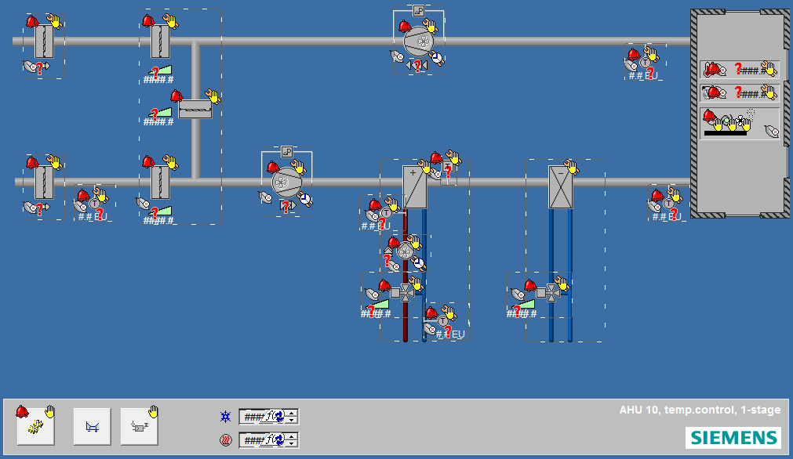
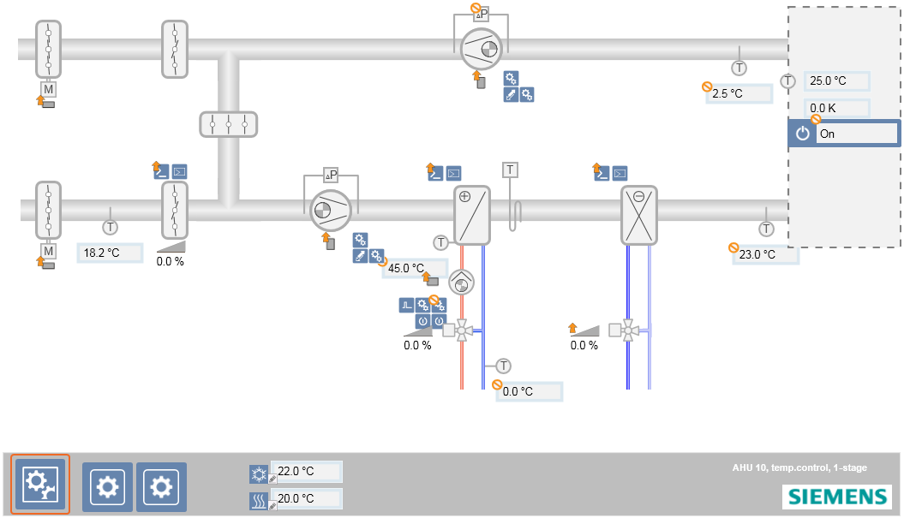
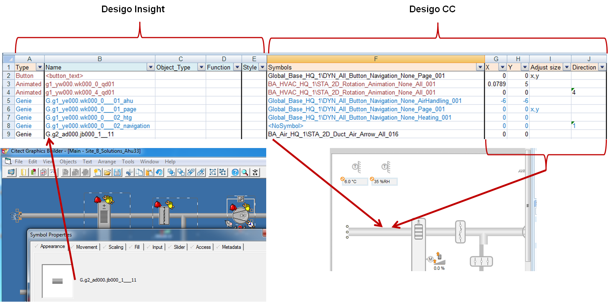
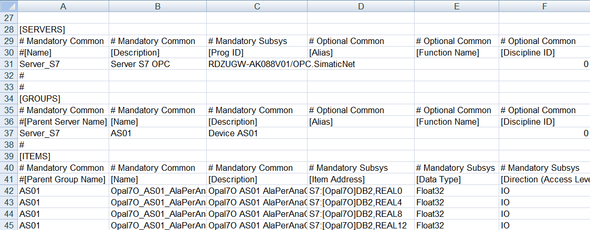
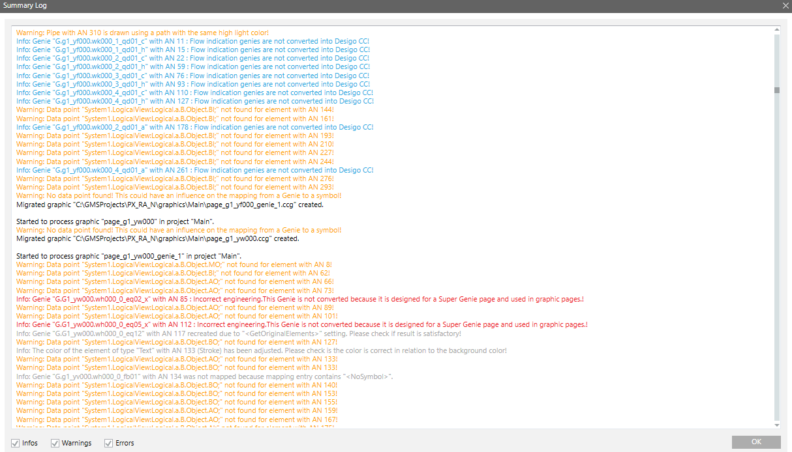
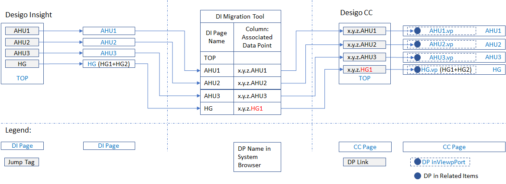
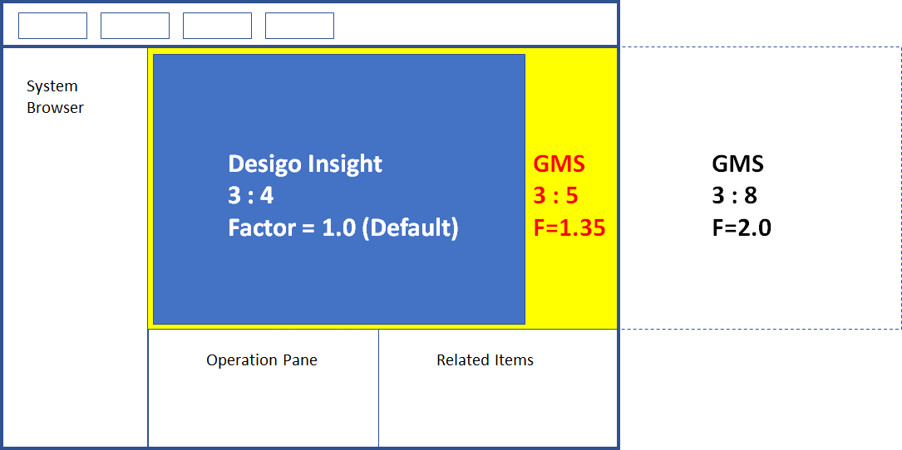
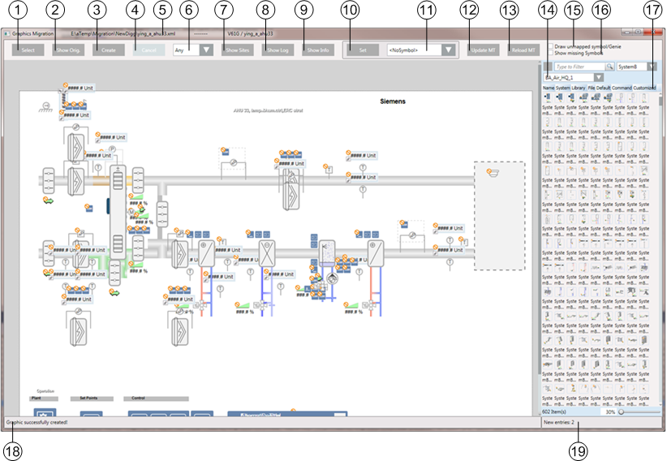
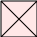

Desigo Insight Graphics Migration
Desigo Insight Graphic Migration
You can migrate Desigo Insight graphics to Desigo CC.
The Desigo Insight Graphics Generator (DIGG) exports Desigo Insight graphics from Desigo Insight to an XML file format. Desigo CC reads the XML files and generates Desigo CC graphics.
Project engineers migrate Desigo Insight graphics to Desigo CC in the Desigo Graphics Migration tab.
Mapping Table
HQ supplies a mapping table, file conversion_table.xlsx, that automatically migrates Desigo Insight graphics as much as possible. The mapping table includes entries for almost all symbols and Genies in the Desigo Insight HQ library.
A Desigo Insight symbol or Genie is mapped to a Desigo CC symbol based on the entries in the mapping table.
For example:
This graphic from Desigo Insight…

…is mapped as follows in Desigo CC.

The original elements, to include animation elements, are drawn in Desigo CC if no mapping was conducted.
Criteria for Mapping Graphic Elements
The following criteria are used for mapping:
- Symbol or Genie name
- Object type, for example, AI_RED, MO
- Function, for example, Fan1St, Fan2St
- DI Substitution
- Style, for example, 2D+, 2D
Example
The following illustration illustrates how a graphic element from Desigo Insight (the Name column) is mapped to a graphic in Desigo CC (the Symbols column).
Columns X and Y define the X and Y offset coordinates. Graphic elements in Desigo Insight and Desigo CC are positioned from the upper left corner. You can set offsets for X and Y coordinates to correct the position of the graphic element since some migrated graphic elements in Desigo CC do not have the same size as graphic elements in Desigo Insight.
You define the size of the graphic element in the Adjust_size column. You define the direction of the graphic element in the Direction column.

You can also define, that:
- The Genie or symbol is not mapped.
- Original elements for the Genie are drawn.
- A Desigo CC icon from the library is used instead of a symbol.
Symbol sets can also be mapped to Desigo CC symbols.
What cannot be migrated?
Pipes are drawn as paths only. Replace as needed using the Desigo CC pipe tool.
Citect Area and Privilege are not supported.
Cicode scripts, i.e. separate *.ci modules, are not supported. Cicode scripts, included as an entity in the graphic, are supported in Desigo CC with the help of Javascript.
Import points before migrating graphics since the data point function and type can influence mapping.
Can Super-Genies be migrated?
Not completely.
In Desigo Insight, Super Genies are always linked to a Genie. In Desigo CC, two elements replace the Super Genies:
- State and operating window: Controlled by object type and function.
- Graphic templates: Controlled by the functions.
A migrated Super Genie includes most of the graphic elements. There is, however, no graphic template and the substitutions probably do not include any usable values.
If you still intend to migrate a Super-Genie, press CTRL in the Desigo Graphics Migration tab and click Select Desigo Graphics. This also displays graphics starting with an underscore or exclamation point. Graphics starting with an exclamation point are typically Super-Genie pages.
Graphics Migration Configuration Tool
The Graphics Migration Configuration Tool helps system specialists to modify the mapping table, for example, when exchanging symbols or changing symbol directions.
Identifying Graphic Elements
The ID Animation Number (AN) is used during graphics migration. The AN clearly identifies a graphic element on a page.
The AN is:
- located in the XML files from Desigo Insight as XML tag ID.
- written to the Description property for a graphic element in the Desigo CC Graphics Engine. located in the Properties area of the Graphics Editor.
- referenced on all log entries.
- displayed in the Details of selected element in the Graphics Migration Configuration Tool.
- Is displayed in the Design Insight Graphics Builder. How do I find a graphic element based on the AN in Desigo Insight?
Influence of Text Formats
As a rule, text formats are migrated to Desigo CC with the same formatting properties as in Desigo Insight. New formatting can be preset using a base graphic if static or dynamic texts are defined that differ from Desigo Insight. The formatting specification impacts all texts on this graphic page.
Simply place a text label anywhere within the base graphic page with the appropriate formatting:
#static#
#dynamic#
Desigo Insight Graphics Migration for OPC Sites
What is the difference in migration for OPC sites?
- Citect Tag names are used.
- The structure of the technical designation (TD) is created based on the entry in the Citect tag comment field (prefix) and Citect tag names.
- There are no HQ libraries for OPC sites. You must configure a symbol library and a conversion table before starting the migration process.
- The import relies on the CSV file OPC_ConfigurationData.csv.
The OPC_ConfigurationData.csv File
Desigo Insight export data does not receive information via OPC tags.
You must create a Desigo CC-specific file to import OPC tags to Desigo CC. The Desigo CC installation receives the CSV sample file OPC_ConfigurationData.csv. You can copy the tags from the DBF data and add them to the CSV file.
You must initially configure this file and then migrate the graphics.

Section | Column | Description |
|---|---|---|
[SERVERS] | [Prog ID] | ComputerName.OPC_ServerName You can copy this information from files ports.dbf and units.dbf. |
[GROUPS] |
| Create a group for each Citect IO device. You can copy this information from file units.dbf. |
[ITEMS] | [Name] | The Citect tab name. You can copy this information from file variable.dbf. |
| [Description] | The Citect tab description. You can edit the description. |
| [Item Address] | The Citect tab address. You can copy this information from file variable.dbf. |
| [Data Type] | You must convert the unit for the Citect Tag to a data type that is known in Desigo CC. For example:
|
| [Eng Unit] | The unit Citect eng. You can change the unit. |
| [Direction] | You can define is as logical required. There are no specific rules here. |
| Alarm parameters | The alarm parameters are based on the Citect alarm tag configuration. You can copy the information from files anaalm.dbf, digalm.dbf, advalm.dbf. |
| [Logical Hierarchy] | Empty. Recommendation: Use a structure similar to Desigo Insight. The structure is part of the comment field for each Citect tag. You can copy this information from file variable.dbf. |
| [User Hierarchy] | Empty. |
What do I need for migration?
- A Citect project with OPC servers, OPC boards, OPC IO servers, variable tags, alarm tags:
- OPC board (specific options): Computer name that hosts the OPC server.
- OPC IO server: OPC server name
- Variable tags: All tag-related information (OPC item name, OPC address, etc.)
- Alarm tags: Alarm-related configuration
- Migration package: The graphics folder with site-specific XML files
Libraries and OPC Graphics
There are no OPC-specific HQ libraries in Desigo Insight. If OPC graphics are created based on RC or project-specific libraries, you must first migrate these libraries to Desigo CC and then modify the mapping table.
You must create a Citect alarm tag in Desigo Insight. Consider the following based on the given configuration:
- You must create a wildcard for the graphic is a Citect alarm tag if used in a Genie or symbol without the original Citect tag. Enter <Level=-1> in column Substitution on the mapping table.
- The Citect alarm tag must be ignored in Desigo CC, if both the original Citect tag as well as the Citect alarm tag is used in a Genie or symbol. You do not need to map, since the alarm bubble function is integrated in Desigo CC.
Desigo Graphics Migration Tab
Migrate Desigo Insight graphics in the Desigo Graphics Migration tab to Desigo CC.
The Desigo Graphics Migration tab becomes available once you install the Desigo Insight Migration extension module. The tab is located in the Management View under Project > System Settings > Conversion Tools > Desigo Graphics Migration. Enable Application Rights for the Desigo Graphic Migration tab if you cannot see the tab.

Desigo Graphics Migration | |
User interface element | Description |
Base graphic | You can use a base graphic, for example, to add a specific logo to all graphics. You must first adapt the migration library and create an example graphic. You can select the base graphic here. The base graphic is applied to all graphics for migration. If you want to apply various base graphics, you must perform multiple migrations using the desired graphics and the suitable base graphic. Objects can be controlled based on the Desigo Insight graphic name using a simple mechanism. Example: Only generate an object under the graphic name AHU and not HG. In this case, the object description has the designation #AHU# on the base graphic. Enter #AHU,Cool,HG# as the object description in the event the object is created on multiple graphic names. The designation is only entered one time on grouped objects. You can add the following offset symbol from the HQ migration library to the base graphic: The X and Y coordinates in the upper left corner of this symbol are used as the offsets on all elements for migration. |
Style | The illustration style. A symbol with various styles can have different offsets. For example: 2D fan display:
2D display in a 2D+ environment with the style Any:
2D display in a 2D+ environment with the style 2D+:
|
Display sites | Open the Mapping Sites to Networks dialog box. This pane displays all sites found in the XML files. Select a network from the Network column to assign it to a site or select the Ignore mapping check box to continue migration without mapping because, for example, you plan on creating the networks at a later date. The settings are saved to the file GraphicConverterSettings.txt in the folder selected during migration. |
Horizontal scaling Value | The graphic pages for migration can be assigned a horizontal scaling factor. Additional information is available in the following section on horizontal scaling of graphic pages. |
Display log | Open the Summary Log window. The window displays a log with information, warnings, and errors that occurred during migration. You can copy the text from the log and add it to a text file.  |
Add DPs | Line a graphic page (previosly a jumptag on a button in Desigo Insight) with a data point (see section Linked Data Point below). The linked data point prevents switching to the Application View when selecting the corresponding data point in System Browser. |
Select all or individual graphics. CTRL and SHIFT to select multiple graphics. | |
Project name | The project name in the Desigo Insight XML file. A new graphics folder under this name is created in the Application View under Applications > Graphics. |
Graphic name | The name of the XML file for migration. The graphics, generated in Desigo CC, bear this name. Move the cursor over the graphic name to view the original graphic from Desigo Insight. |
Associated Data Point | The data point is linked to the graphic. Additional information is available below in the section on Associated Data Point. |
Date/time of last migration | Date/time of the last migration. Double-click a line to open and edit a migrated graphic in the Graphics editor. |
Migration state | Migration state. The entry |


Associated Data Point
A lot of graphics in Desigo Insight have buttons that go to a specific page. You can link a graphic to a data point so that navigation continues to operate. A viewport under the name VP graphic name is generated if the graphic is migrated and linked to the target. Click the graphic after migration to go to the associated data point in the Logical View. This prevents switching back and forth between the Logical View and Application View (operating concept on the graphic).
Example:

In Desigo Insight, the jump tags with references of file names to the graphic page are set, for example AHU1. A corresponding data point reference must be assigned from the Logical View in order for navigation from a Desigo Insight jump tag operates as well in Desigo CC, for example: x.y.z.AHU1. This reference is required in viewport as well as in the Related Items tab for the corresponding graphic. You only need to assign one data point reference if multiple partial plants, for example HG1 and HG2, exist on a graphic page.
The button goes to the corresponding graphic if there is no associated data point.
The settings are saved to the file AssociatedDps.txt in the folder selected during migration.
Horizontal Scaling of Graphic Pages
The graphic pages for migration can be assigned a horizontal scaling factor. A Desigo Insight graphic page has a default page ratio of 3:4. The ratio can be modified for Desigo CC. The optimum scaling for graphic migration for Desigo CC is 1.35. Post-editing is nevertheless normal, since graphics can be moved or small gaps may occur depending on the how the graphic objects are used.

Graphics Migration in a Distributed System
In a distributed system, each system with the Desigo Insight Migration expansion module has the node Desigo Graphics Migration in System Browser.
The Desigo Graphics Migration is specific to the system, i.e. in the Desigo Graphics Migration tab, you migrate the graphics to the system you selected.
You cannot migrate from one system to another that does not have the Desigo Graphics Migration node.
Graphics Migration Configuration Tool
The Graphics Migration Configuration Tool can be used to create a customized mapping table (conversion_table.xlsx).
The Graphics Migration Configuration Tool (Siemens.Gms.DesigoGraphicsMigrationConfiguration.exe) is located at [Installation Drive]: > [Installation Folder] > GMSMainProject > bin.
The Graphics Migration Configuration Tool only works on an active project.
Graphics Migration Configuration Tool

Graphics Migration Configuration Tool | |
| Description |
1 | Open the Add file dialog window. The name of the XML file that you want to migrate to Desigo CC. |
2 | Displays the original graphic from Desigo Insight. |
3 | Save changes if you have added a new symbol. For example, if you want to review what your graphic will look like after a change, click Create and view the edited graphic. The graphic is only written to the mapping table by click Update MT. |
4 | Cancels graphic creation. |
5 | Displays the file name, path, and name of the Citect project, and the name of the graphics page. |
6 | Set the style. Set the style before migrating a graphic. A symbol with various styles can have different offsets. |
7 | Open the Mapping Sites to Networks dialog box. This pane displays all sites found in the XML files. Select a network from the Network column to assign it to a site, or select the Ignore mapping check box to continue migration without mapping because, for example, you plan on creating the networks at a later date. |
8 | Open the Summary Log window. The window displays a log with information, warnings, and errors that occurred during migration. You can copy the text from the log and add it to a text file. |
9 | Open the Details on selected element dialog window. The window displays information on the original symbol from Desigo Insight if you have selected a symbol and displays the corresponding Desigo CC symbol. The window pane on Mapped from displays information on the Desigo CC symbol. The window pane on Mapped from displays information on the Desigo Insight Symbol. You can copy the name of the Genie and, for example, search for the entry in the mapping table. The window displays information on the graphic element if no symbol is selected. Pressing the shift key and this button opens the Genie Substitutions dialog window. The Genie Substitutions dialog window displays all substitutions and their values that are found for the Genie with the selected symbol. You can select a substitution and add it as <ObjectRef> =<Ref:%TD%> as a substitution for the selected symbol. Existing entries are overwritten. |
10 | Conducts the action that you have selected in the field to the right. |
11 | Sets these entries in the mapping table:
|
12 | Writes the changes to the mapping table. All changes are saves to Cache until you click this button. |
13 | Reloads the mapping table. All changes are lost. |
14 | Select the symbol library. |
15 | Draws all primitive graphics if a Desigo Insight symbol or Genie is not assigned a Desigo CC. |
16 | Displays elements with empty symbol names. This symbol instance is displayed:  The symbol is not displayed if the symbol name is set to <NoSymbol>. |
17 | Displays symbols from the selected library. To replace a symbol from the library, select the symbol you want to replace. Right-click the symbol in the Library and click Replace. |
18 | Displays the state of the graphic. |
19 | Displays the number of changes and new entries in the mapping table. Changes are movements and rotations to symbols and manipulations to selected elements with Set or changes to symbols in Symbol Browser. New entries are Genie names, added to the mapping table in the Graphics Migration Configuration Tool, if no entry is found. The counter is reset after updating the mapping table. Movements and rotations to a symbol with the mouse or arrows are only saved after clicking Create or Update MT. The status is displayed in the status display during saving. |